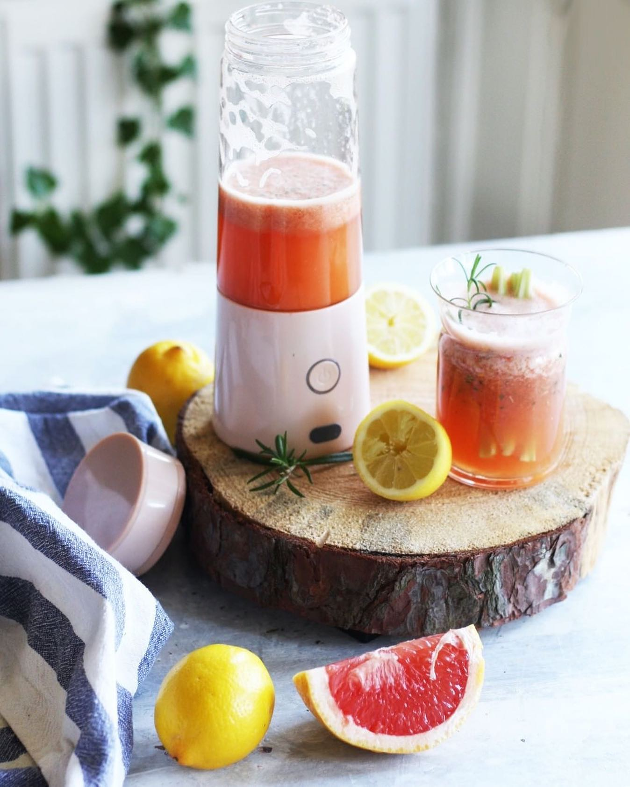

Chcete si na konci dňa dať niečo chutné? Dnes sa s vami podelíme o chutný zdravý kokteil a základom je #Kombucha alebo #ciernycaj 😍⠀⠀⠀⠀⠀⠀⠀⠀
⠀⠀⠀⠀⠀⠀⠀⠀⠀
Alkoholické nápoje majú zvyčajne veľa cukru a Kombucha môže byť zdravou alternatívou bez alkoholu, ideálna na koktaily. ⠀⠀⠀⠀⠀⠀⠀⠀⠀
⠀⠀⠀⠀⠀⠀⠀⠀⠀
Čo potrebujete? ⠀⠀⠀⠀⠀⠀⠀⠀⠀
✔️Váš #Davoli ⠀⠀⠀⠀⠀⠀⠀⠀⠀
✔️150-200 ml kombuchy (zelený alebo čierny čaj) ⠀⠀⠀⠀⠀⠀⠀⠀
✔️1 / 2 malý grapefruit ⠀⠀⠀⠀⠀⠀⠀⠀⠀
✔️Šťava z 1 citróna ⠀⠀⠀⠀⠀⠀⠀⠀⠀
✔️1 vetva rozmarínu ⠀⠀⠀⠀⠀⠀⠀⠀⠀
⠀⠀⠀⠀⠀⠀⠀⠀⠀
Sleduj @davoli_official pre viac inšpirácii 🌿
Koktaily podľa @davoli_official